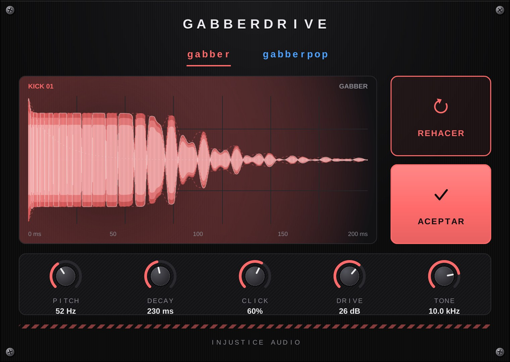

Generador de kicks
GabberDrive
Cualquier nota MIDI dispara un kick de gabber o gabberpop. Si no te gusta, pulsa Rehacer y te genera otro.
- Dos estilos: gabber y gabberpop
- Pitch, decay, click, drive y tone
- Forma de onda en vivo para ver el golpe
Descargar GabberDrive
Windows 64 bits · VST3 · sin instalador
Descomprime el .zip y copia la carpeta GabberDrive.vst3 a C:\Program Files\Common Files\VST3. Después busca plugins nuevos en FL Studio.